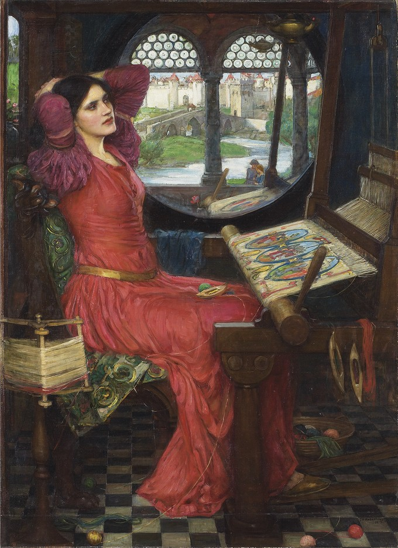
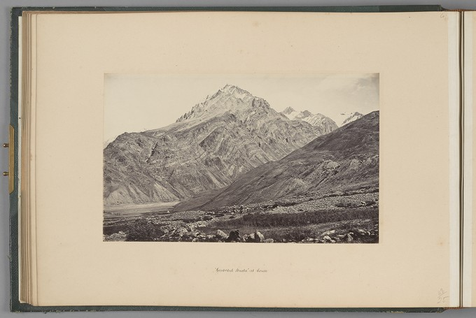
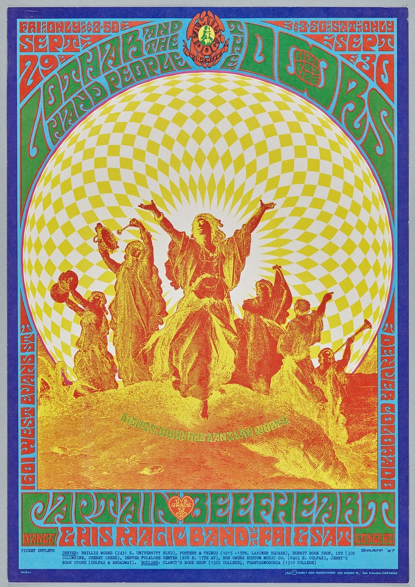
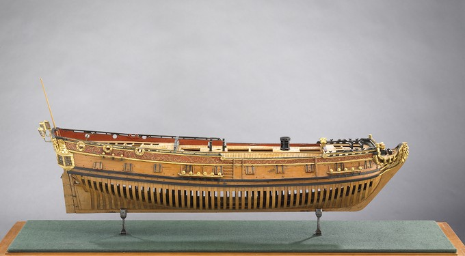
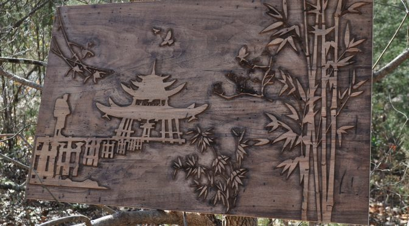

Welcome to Art
Coloring the World, One Brushstroke at a Time!
Featured Products
Oil on canvas

" 'I am half sick of shadows,' said The Lady of Shalott" (Alfred, Lord Tennyson, The Lady of Shalott).
Photographs

albumen print from wet collodion negative.
Prints

Flash", the Doors, Lothar & the Hand People, Captain Beefheart & His Magic Band, September 29-30, 1601 West Evans Street, Denver, Colorado
More Categories Wooden Models
Ship Models

24 Gun Warship, Nightingale, Navy Board Model.wood, painted and gilded (varnished?); metal; mica
NEODECO

a creative and innovative art form that uses wood to create sculptures, paintings, and other objects.